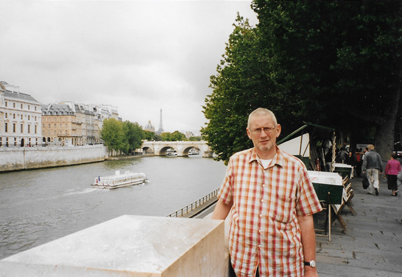
A long weekend visit to see friends of Faye (Seán's niece) and her husband Paul, who were living in Paris - and to do a bit of exploring ourselves.
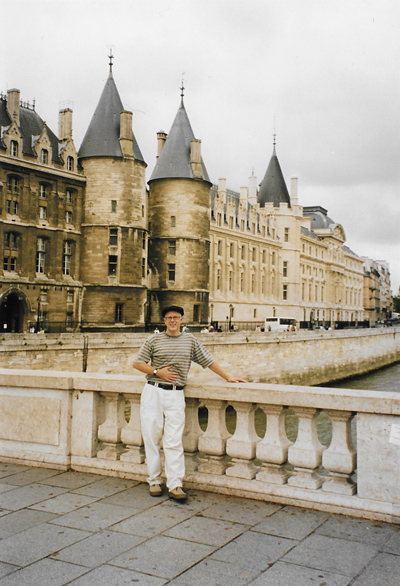
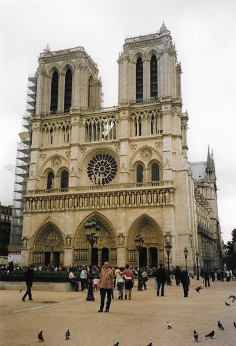
The River Seine is attractive at any time of the year and the Cathédrale Notre-Dame de Paris is considered to be one of the finest examples of French Gothic architecture.
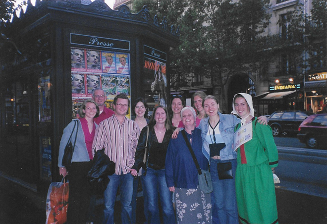
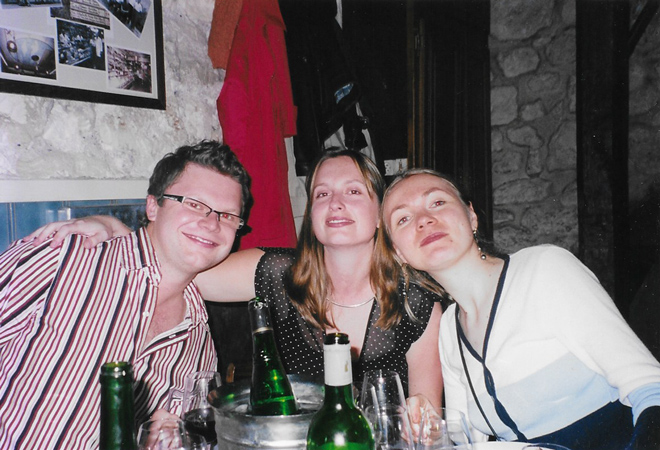
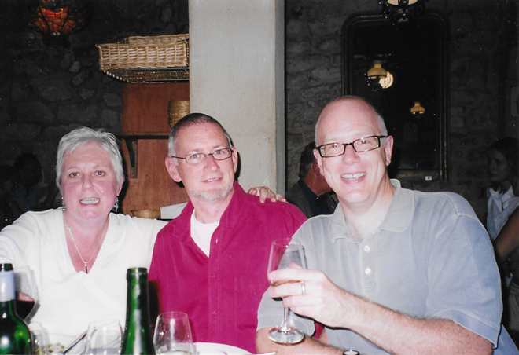
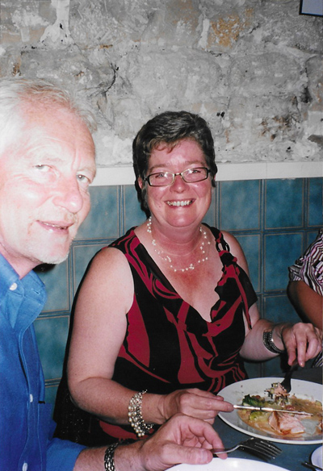
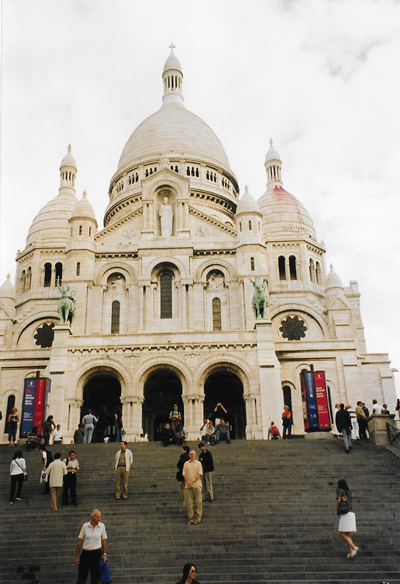
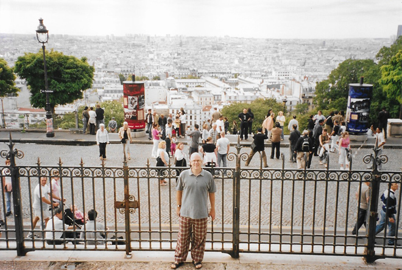
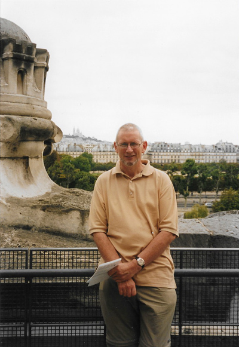
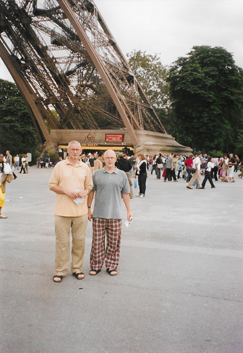
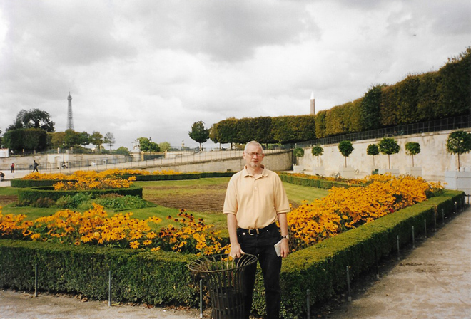
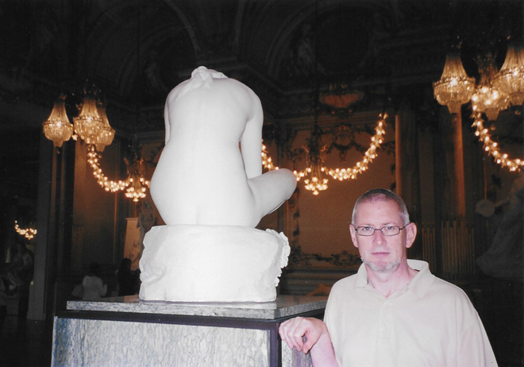
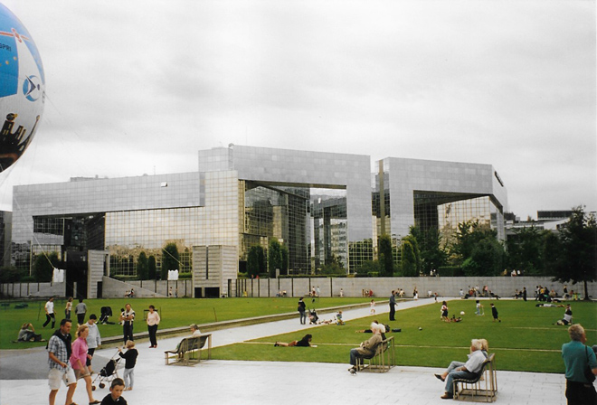
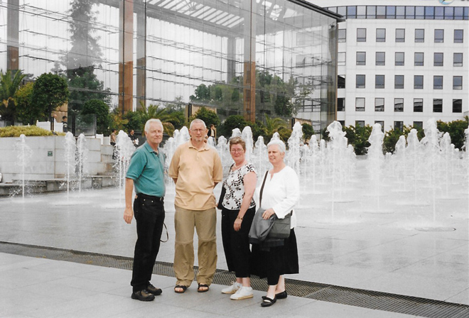
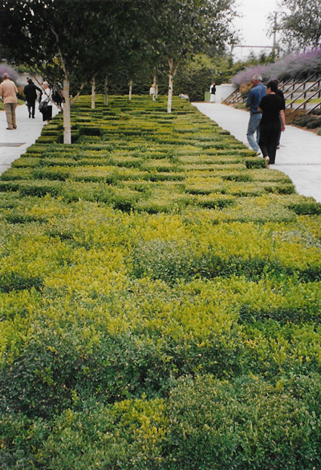
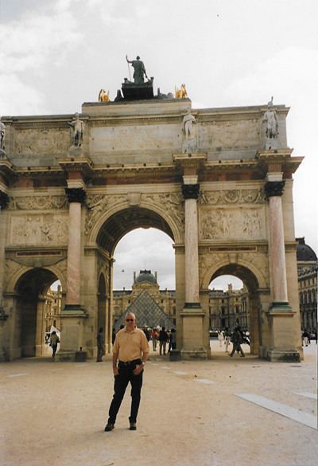
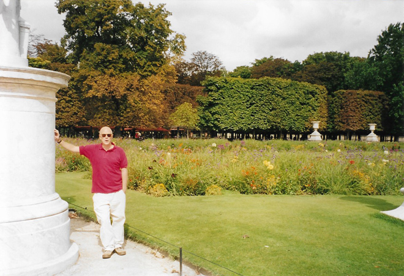